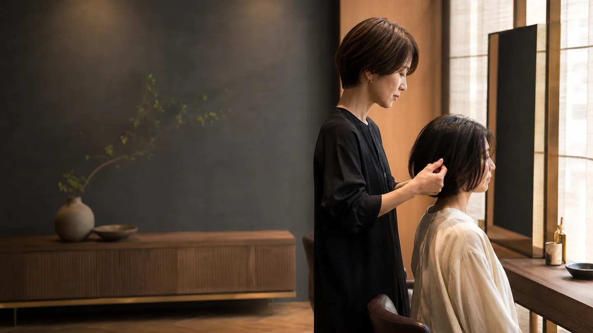

丁寧に聞く
好みだけでなく、お手入れに使える時間や髪のお悩みまで伺います。

FOR YOUR FIRST VISIT
予約前の不安を減らせるよう、相談・料金・施術の流れを分かりやすくお伝えします。
好みだけでなく、お手入れに使える時間や髪のお悩みまで伺います。
カウンセリングから仕上げまで、一人のスタイリストが担当します。
施術内容・目安時間・料金を確認してから、施術へ進みます。
FIRST VISIT
メニューを決め切れない状態でも、髪を見ながら一緒に整理できる想定です。
COUNSELING
なりたい印象、過去の施術、日々のお手入れ方法を伺います。
CONFIRMATION
できることと難しいことを共有し、納得いただいた内容で進めます。
HOME CARE
乾かし方やスタイリングの要点を、無理のない範囲でお伝えします。
STYLIST
Owner Stylist / 架空プロフィール
FAQ
不明点を残さず予約方法へ進めるよう、代表的な質問をまとめたUIデモです。
はい。髪の状態やご希望を伺い、施術内容・目安時間・料金を確認してから決める想定です。
一席ずつご案内する小規模サロンを想定しています。予約時に同伴の旨を伝えられる設計です。
現金・クレジットカード・主要なキャッシュレス決済に対応する想定です。実際の決済機能はありません。
いいえ。本サイトは自主制作の架空デモです。LINE・Web・電話の予約ボタンはすべて無効化しています。
ACCESS
以下の店名・住所・交通情報は、画面構成を示すための架空設定です。
NAGI HAIR
東京都葛飾区 NAGI 1-2-3（架空住所）RESERVATION
実案件ではLINE・Web予約・電話を接続する想定です。この自主制作デモでは、外部送信を防ぐためすべて無効化しています。
※ ボタンは意図的に無効化しています。予約・送信・発信は行われません。